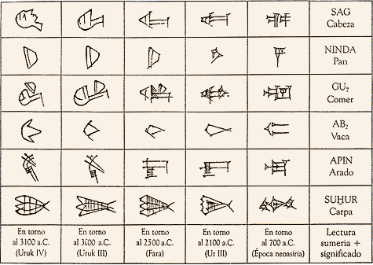

O que é palavra?
O que é palavra?
-
Da palavra depende a nossa comunicação com o outro e com nós mesmos. Vivemos com as palavras, vivemos nas palavras, estamos nas palavras. Já fomos falados por elas, antes mesmo de existirmos, quando nossos pais discutiam a escolha do nosso nome de batismo, pois o nome de família estava dado de antemão.
As palavras antecedem a nossa existência e sobrevivem para muito além de nossa vida individual. É por isso que o famoso linguista suíço Ferdinand de Saussure, criador do estruturalismo linguístico no início do século XX, afirmava que a língua, sistema de regras preexistente que possibilita a nossa fala, é um tesouro coletivo. Mesmo que todos os falantes de uma língua estivessem dormindo em um dado momento, ela continuaria sendo um tesouro coletivo.
-
Primeira diferença
Com base nisso, já se pode estabelecer uma diferença importante entre língua e fala. A língua é social e pertence a todos os que a internalizaram pelo convívio coletivo. A fala é o desempenho de cada um de nós no saber adquirido de uma língua. Não há nada mais encantador do que testemunhar o gradativo mas célere desempenho linguístico das crianças a partir de 1 ano de idade e o domínio surpreendente que já revelam por volta dos 3 anos, quando apresentam estruturas sintáticas complexas, antes mesmo de terem a ponta da língua no ponto exato de articulação fonética exigido.
-
Segunda diferença
Outra diferença importante é aquela que se estabelece entre a palavra falada e a palavra escrita. Há muitas formas de escrita:
-
Ideográfica
Exemplos de ideogramas do kanji (escrita japonesa desenvolvida com base em caracteres chineses)
一 um, unidade
二 dois, duas unidades
上 em cima/superior
下 embaixo/inferior -
Pictográfica
Exemplos de ideogramas
Kanji (escrita japonesa desenvolvida com base em caracteres chineses)
木 árvore (moku)
山 montanha (yama)Escrita suméria (período Uruk IV – cerca de 3100 a.C.)
cabeça (sag)
-

-
Hieroglífica
Exemplos de hieróglifos egípcios (significados e sons representados)
água n (oclusiva sonora dental nasal)
boca r (líquida vibrante dental)
cobra ḏ/dy (africada pré-palatal fraca)
-
Essas formas de escrita não apresentam correspondência com a palavra falada. São, na realidade, formas muito complexas de representação dos significados da fala.
Já a linguagem escrita que conhecemos no Ocidente é alfabética. O que isso quer dizer? Cada letra do alfabeto desenha o som correspondente na linguagem falada. Com poucas letras, pode-se representar visualmente tudo o que somos capazes de falar.
A B C D E F G H I J K L M N O P Q R S T U V W X Y Z
Pronto: bastam 26 letras para tudo que se já escreveu, se escreve e se escreverá em língua portuguesa.
Assista aos vídeos do Ministério da Educação (MEC) sobre a história da escrita.
-
Terceira diferença
A terceira diferença que se deve ter em mente é aquela entre os suportes da linguagem escrita. Esses suportes são históricos.
Para gravar a escrita, os sumérios utilizavam tijolos de barro; os indianos, folhas de palmeira; os maias e astecas usavam uma matéria-prima que era encontrada entre a casca e a madeira das árvores; e os romanos faziam uso de tábuas de madeira cobertas com cera.
Redes sociais na Roma Antiga? Leia a matéria da BBC Brasil. -
-
-
A origem remota do papel remonta aos egípcios que, 2.500 anos atrás, encontraram no papiro, extraído da medula da planta de mesmo nome, o suporte para a escrita hieroglífica. O papiro é uma das plantas mais antigas conhecidas pelo homem. Embora tenha sido usado pelos egípcios como suporte para a escrita, foram os gregos que deram ao papiro um uso dirigido à literatura. Sua aparição na Grécia ocorreu no século VII a.C. O pergaminho, antecedente do papel, provinha da pele de carneiro e era difícil de manusear, muito caro e, portanto, limitado. Assim, até a invenção de Gutenberg, a leitura era uma prática restrita a poucos e a produção de livros, uma arte cara e trabalhosa.
-
Foram os chineses que deram início à confecção do papel produzido com fibras vegetais. E, para passar da China ao Ocidente, o papel precisou da mediação dos árabes. Sem o papel, os tipos móveis de Gutenberg não teriam função. Estes precisavam de uma superfície a um só tempo resistente, para suportar o peso do chumbo, e porosa, para absorver a tinta. Tipos móveis e papel constituem um encontro feliz, uma aliança que deu certo e reinou soberana e quase exclusiva por quatro séculos. Dessa aliança nasceu a história do livro impresso que, até a explosão do jornal, no século XIX, era o único meio de armazenamento, memória e transmissão do conhecimento e da informação letrada.
-
O jornal e suas máquinas rotatórias foram contemporâneos da Revolução Industrial. Esta trouxe um marco de transformação cultural cuja profundidade não pode ser minimizada. Com ela vieram a máquina a vapor, os trens, o telégrafo, a popularização dos correios, o surgimento dos cartões-postais, a eletricidade, a fotografia, a gravação sonora, o telefone e a cinematografia. No final do século XIX, a alfabetização já começava a ser obrigatória em alguns países e as mulheres emergiam como público leitor.
-
Em 1857, na França, Gustave Flaubert lançou um romance de grande impacto na sociedade da época: Madame Bovary. Considerado a primeira obra do Realismo, o livro apresenta um caso de adultério feminino que se tornou modelo para a literatura mundial. A protagonista, Emma Bovary, é uma mulher casada que, entediada com sua rotina pequeno-burguesa no campo, vive mergulhada na leitura de livros românticos. Inspirado em um caso real de adultério, a polêmica em torno do livro levou Flaubert aos tribunais, aumentando ainda mais o interesse do público.
-
Ouça o que o escritor José Godói fala sobre esse clássico da literatura universal no Clube do Livro (rádio CBN):
-
Portanto, a Revolução Industrial deve ser lembrada no contexto da palavra: foi nessa época que a palavra começou a viajar do livro para os jornais, para a publicidade, para os cartões-postais. Além disso, passou a competir com o mundo da imagem fotográfica e cinematográfica.
Outro grande marco de transformação da palavra escrita se deu com o advento da informática e da cultura digital, que emergiu quando o computador se transformou em um meio de comunicação planetário.
-
Antes da digitalização, os suportes das diferentes linguagens eram incompatíveis, pois cada linguagem possuía o seu próprio suporte e mídia: papel (texto), película (fotografia ou filme), fita magnética (som ou vídeo). Atualmente, a transmissão da informação digital ocorre independentemente do meio (fio de telefone, onda de rádio, satélite de televisão, cabo etc.). Sua qualidade permanece perfeita e sua estocagem é barata.
Um dos aspectos mais significativos da evolução digital foi o rápido desenvolvimento da multimídia, que acarretou a convergência de vários campos midiáticos tradicionais. Foram fundidas, em um único setor do todo digital, as quatro formas principais da comunicação humana: o documento escrito (imprensa, magazine, livro), o audiovisual (televisão, vídeo, cinema), as telecomunicações (telefone, satélites, cabo) e a informática (computadores e programas informáticos), produzindo o que passou a ser chamado de “convergência das mídias”. É justamente essa convergência de linguagens e mídias que hoje encontramos nas redes, acessíveis por meio de qualquer dispositivo móvel ou fixo. Os computadores foram ficando cada vez mais potentes, populares e miniaturizados. Estão hoje pertinho de nossos corpos. Neles as palavras coreografam com outras linguagens: setas, gráficos, cascatas, imagens e sons de todas as naturezas.